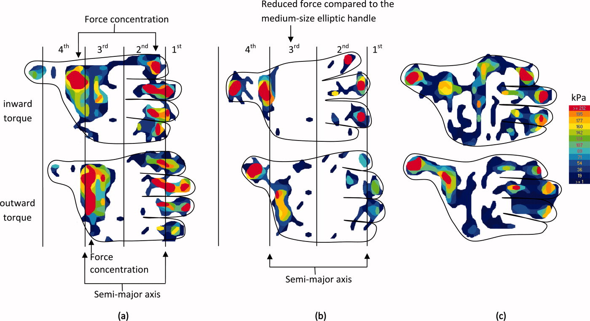
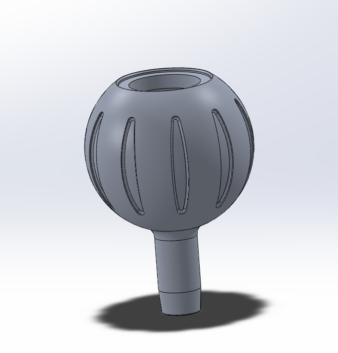
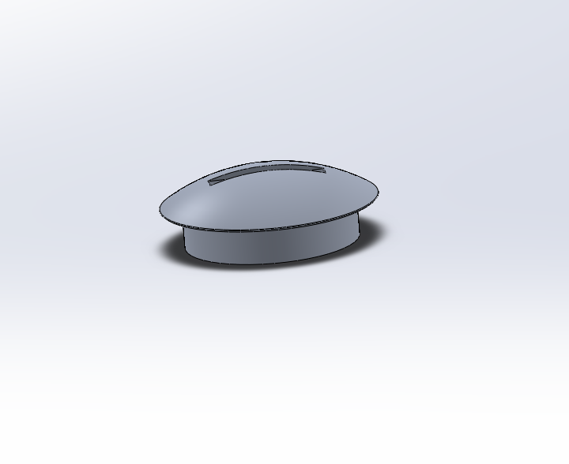
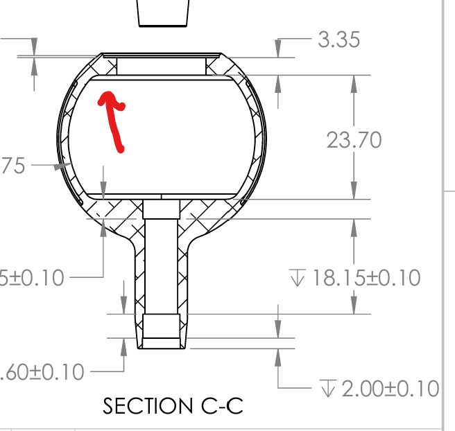
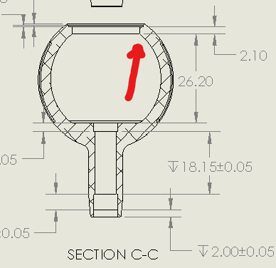
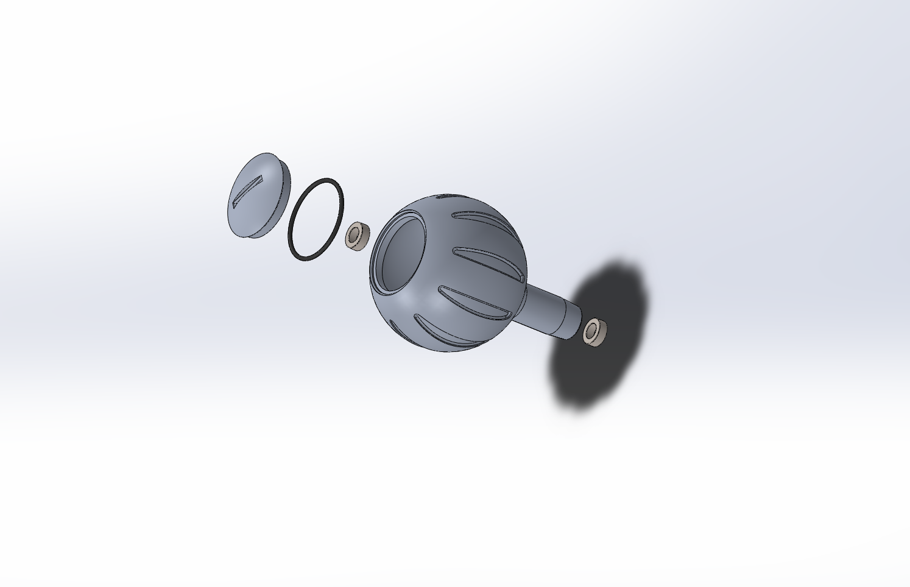

Nissan 350Z Restoration / Mods
Restoration work, modifications, and upgrades performed on my Nissan 350Z.
Projects I've worked on, internships, DIY stuff, and a bit more about me. Updated regularly.
Updated as of: 6/19/2026
Research projects, internships, and personal builds.
Below you can find some of the projects I worked on as an intern with the manufacturing team.
This project focused on automating the data compilation required for scheduling and completing build reviews, including key information such as truck serial numbers, model year, customer details, and cost data.
This project focused on developing a structured system of custom organizational solutions, including custom 3D printed & laser cut organizers/cubbies for the toolboxes, shift-specific tool sets, line-level expenditure tracking, and incentive strategies to reduce waste in tool spending across the manufacturing line.
This series of projects focused on solving recurring issues on the line by developing practical, easy-to-fabricate flat steel solutions that improved safety, efficiency, and overall quality of life for operators. Most of the components shown below were designed as safety enhancements, along with a custom dolly system engineered to transport 200+ lb rails across an outdoor test platform.
Below you can find some of the projects and experiences I worked on during my internship at intel :)


This project focused on designing and manufacturing etch tool specific parts, toolkit inserts, and other process improvement parts.
Designed and 3D-printed modular inserts for calibration tool storage, paired with a SharePoint and PowerApps system so tool owners could manage and customize their own configurations.
Built a set of Power BI dashboards pulling from SharePoint, Excel, and PowerDAX to give the team clear, visual access to calibration status, missing tools, and financial impact data.
Built a PowerApps tool with QR code scanning that instantly pulls up the chemical plumbing diagram for any tool chamber — deployed across 50+ tools, saving an estimated $280K/year in technician labor.
Developed a PowerApps tool and PowerAutomate flow to fully automate plant-wide training scheduling, saving Intel approximately $75,000/year in management labor.
Hands-on DIY projects.
Restoration work, modifications, and upgrades performed on my Nissan 350Z.
Repairs and upgrades completed on my Mazda Miata.
A collection of repairs and upgrades completed on my Mazda Miata.
This was the first car I owned at the young age of 16. I bought it from the 2nd owner in South Florida, who had driven it to around 110,000 miles, and taken extraordinarly good care of it. This was where my obsession with cars developed, and when I knew I wanted to pursue a Mech E career. This specific model is a 2005 Touring, with a 5 speed manual transmission, and unfortunately an open differential.
While I do not have photos of the working process for this vehicle, below is a list of modifications I have done to the car.
A growing collection of some of the repairs, upgrades, and restoration work I've done on my 350Z throughout my 5 years of ownership.
The Nissan 350Z is one of the most iconic Japanese sports cars of the early 2000s and part of Nissan’s legendary sports car lineup. Powered by the bulletproof VQ35DE engine, the car is known for its affordability, reliability, and excellent performance for its time. My particular car was acquired from an older woman in 2021 with only 19,500 original miles, which is almost unheard of for a car produced in such large numbers—especially one that was already 16 years old at the time. Since then, the car has reached around 45,000 miles, and I have performed a variety of preventative maintenance items along with upgrades and cosmetic improvements. This car was a replacement for my 2006 Mazda Miata which I had purchased as my first car when I turned 16. You'll find some photos of that car at the end of my slideshow.
This DIY project focuses on learning more about my car in particular, figuring out its quirks, and expanding my existing automotive knowledge. You'll also find out how obsessive I can get with cars lol.
During my fall semester at UCF last year (2025), I had noticed that my airbag light came on, and none of my steering controls were working. Eventually after some research and connecting the dots, I realized my clockspring was bad and it was time for replacement. Around the same time, I had also noticed that my center cubby door had broken, which is a common issue on early 2003–2005 model year 350Zs. This meant that over break I had to take much of my interior apart to fix these problems, effectively making the car unusable for a couple of weeks. Since I stay with my parents during breaks, this gave me a good opportunity to tackle multiple projects while the car was already disassembled and while I waited for parts. In addition to the clockspring and cubby door, I addressed the front and rear lights which had developed hazing from age, small interior details like scratches on the center console, shift knob, and steering wheel, and gave the car a full detail.
During this break, I focused on practical upgrades that improved both the functionality and daily usability of my 350Z. These projects were centered on modernizing the car’s interior systems and refreshing worn mechaniacl components.
Education, coursework, and academic achievements.
Software / Coding: Certified in SolidWorks for Mechanical Design (CSWA), Siemens NX, Python, C, MATLAB, Arduino, Power Automate, Microsoft Excel, PowerPoint, PowerBI, PowerApps, Jira.
Design / Manufacturing: AutoCAD, 3D Printing, Rapid Prototyping, Finite Element Analysis, PCB Assembly, Sheet Metal Fabrication, Mechanical Design of Plastic Components, Fixture Design, Injection Molding, Custom Mechanical Tooling, Tolerance Analysis, GD & T, Lean Manufacturing Principles, Abstract Problem Solving, Reverse Engineering, Semiconductor Manufacturing, Failure Analysis, Product Development, Project Planning.
Data: Jira Digital Task Management, SQL, Data Queries, Bill of Materials, Cost Analysis, DOE, Risk Management, Data & Graph Analysis, Data Analytics.
Languages Spoken: English, Spanish, French
School: University of Central Florida College of Engineering and Computer Science
Major: Mechanical Engineering B.S.
Major Coursework: Thermodynamics, Dynamics, Solid Mechanics, Structures and Properties of Materials, Statics, Physics 1-2, Calc 1-3 + Diff Eq, Intro to Python & C.

School: South Fork High School
Program: IB/AP


Hi, my name is Jean-Claude Dubarry, and I’m a student at the University of Central Florida (UCF) pursuing a Bachelor of Science in Mechanical Engineering. I am interested in the development of innovative technologies in the consumer electronics industry, and expanding my knowledge on robotics.
My current experience is primarily in manufacturing, where I have been exposed to large-scale production processes. Moving forward, I am interested in transitioning more into mechanical design, where I can focus on developing and designing new mechanical systems and products.
I am always looking for opportunities to continue learning, expand my technical skills, and contribute to innovative technologies.
Outside of engineering, to stay active and maintain a balanced lifestyle, I enjoy fishing, cooking, working on cars, and weight lifting. Below you can find out more about some of my hobbies:
Scroll Down to Learn More ↓


A fully engineered, research-backed replacement for the Stradic's stock handle knob — designed from scratch with CNC-machined 6061-T6 aluminum, ceramic bearings, and full saltwater sealing.
The Shimano Stradic C3000XG is a genuinely impressive reel — smooth action, excellent carbon drag, and a trim 7.9 oz build. But at $250, the handle knob is a clear weak point: undersized, plasticky, and lacking the grip area needed when fighting a larger fish and your hand starts to slip.
Higher-end reels from Tsunami and Van Staal feature fully CNC-machined aluminum chassis and submersible sealing throughout. The Stradic's knob simply doesn't match the rest of the reel's pedigree — so I decided to design and build my own as a personal engineering project.
Before any design work, I measured every critical dimension of the shaft, bearings, and handle assembly by hand, then produced a dimensioned sketch to understand the full geometric constraints of the design envelope.
Two peer-reviewed ergonomics studies shaped the geometry. While both studies were originally conducted in the context of cylindrical pipe and handle grips, their findings translate well to a fishing reel knob — especially when switching grips rapidly while fighting a powerful fish under load. The first study established that ideal handle diameter is 19.7% of hand width; for my hand (182 mm), that's approximately 36 mm. The second demonstrated that an elliptical cross-section produces 25% greater twisting torque than a cylinder, with textured or rubber surfaces adding a further 31%.
In addition to the published research, I personally fish a wide variety of environments and have handled higher-end fully sealed reels like those from Van Staal and Tsunami. The difference in grip confidence — especially with wet hands in saltwater — made the motivation for this project immediately clear.

Force concentration maps from the elliptical handle torque study referenced below.
↗ Study 1 — Ideal Handle Diameter (ScienceDirect) ↗ Study 2 — Elliptical Handle Torque (Taylor & Francis)I started by sketching the full handle assembly by hand with all key dimensions labeled, then explored two concept directions: Concept 1 (one-piece, flat-cut profile) and Concept 2 (fully round with a threaded two-piece cap system).
Five PLA printed prototypes were produced to validate fit, geometry, and feel before committing to aluminum. Each iteration addressed a specific failure or insight from the version before it.
The wall between the shaft connection and the knob body was too thin for PLA and snapped on installation. Wall thicknesses needed a major rework. The grip pattern also felt off and was redesigned for the next version.
Wall thickness at the joint was substantially increased. Knob diameter grew from 35 mm to 40 mm as a test, the grip pattern was redesigned, and a gentle taper toward the tip was added to echo the feel of the stock knob.
The print revealed two measurement errors: the upper bearing seat wasn't sitting high enough, and the knob base didn't sit flush with the end of the handle shaft. Both were corrected before proceeding.
Shaft length was shortened to correct excessive clearance. The grip cuts were updated from straight vertical channels to a helical wrap pattern — more ergonomic and more visually refined. Planning for the two-piece assembly began at this stage.
The most complete redesign. The grip texture became a golf-ball style dimple array — visually distinctive and highly effective for wet-hand grip. The design became a proper two-piece threaded assembly with an O-ring seat in the cap and a rubber seal at the shaft base, fully sealing both ends. Two ceramic bearings were integrated into the body cavity.
Engineering drawings for the Prototype 5 assembly were produced and submitted to the machine shop:
After submitting the Prototype 5 drawings, the shop flagged three issues: the 0.05 mm tolerance was beyond their capability (minimum 0.1 mm), the internal bearing retention feature couldn't be machined reliably, and the exterior dimple pattern required tooling they didn't have.
All three were addressed: tolerances relaxed to 0.1 mm on critical features, internal retention geometry simplified, and the dimple surface replaced with bead blast + anodize — fully compatible with their process.
Updated drawings with relaxed tolerances, simplified internals, and bead blast + anodize finish spec — resubmitted to the machine shop for approval:


0.05 mm tolerance unachievable. Internal bearing retention not machinable. Dimple pattern requires unavailable tooling.
Relaxed critical tolerances to 0.1 mm. Simplified internal geometry. Replaced dimples with bead blast + anodize finish.
Revised drawings submitted to machine shop for approval. Awaiting sign-off before production begins.
After reaching out to a few more shops, they all flagged the same thing: a small internal lip I'd designed to retain the gasket was creating an undercut that made the part impossible to machine even on a 5-axis. The fix was pretty straightforward — move the lip back and reduce the thread depth slightly so the bore connects directly to the opening and a cutter can actually reach it.
I also swapped the dimples for helical groove cuts. Most shops could do the dimples, they just wanted a lot more money for them. The grooves grip just as well and look clean, so it was a no-brainer. And I went back to 0.05 mm on the bearing bores — that tolerance is non-negotiable for a proper press fit, and I found shops that could actually hit it. You can see the before and after below.

Before — that small lip made it unmachinable

After — lip gone, bore open all the way through

SK-001 (Body) and SK-002 (Cap) — sent to the machine shop for production.

🔧 Currently being made in the Machine Shop — will update with final image :)
A from-scratch conversion of a Creality Ender 3 V3 SE — turning a standard FFF printer into a Direct Ink Writing (DIW) system for biomaterial deposition. Designed, built, wired, and programmed solo for the Functional Materials and Devices Laboratory at UCF.

A few labs have published their own FFF-to-DIW conversions, with some even releasing STL and STEP files. Rather than copy one of those builds, the goal was to start from the same concept but fix the weak points: limited syringe compatibility, too much mechanical compliance, 3D-printed gears, a top-heavy build, and a dual-lead-screw plunger prone to uneven pressure and deflection.
The Creality Ender 3 V3 SE was picked up refurbished for $120 — open source, NEMA17-compatible, auto bed-leveling, and close enough to the Ender 3 V2 used in the reference build that the same approach would carry over. Only the gantry carriage and firmware needed changes; the frame, motion system, and bed stayed stock.
Three concepts were tried before landing on the final design. The first used a belt drive with a lead screw, but that introduced too much compliance and pressure lag. The second moved the motor up onto a rack-and-pinion setup, which helped, but raised the center of gravity and skipped gear reduction entirely. The breakthrough came with an offset drive shaft running through three pinion gears and a 3:1 bevel gear reduction — it kept the motor low and the system compact, while giving the syringe plunger smooth, predictable pressure.
The SolidWorks assembly came together as four main sub-assemblies: the base mount, the main gearbox housing, the bottom connecting piece, and the front swappable faceplate. The base mount started out designed around an MGN12 linear rail interface, but that was eventually swapped out in favor of the printer's own stock wheel-based X-axis printhead mount, which fit the build better and cut out an unnecessary part. The gearbox housing carries the bevel gears, bearing seats, and a magnetic snap-on cover; the bottom connecting piece ties the gearbox to the rest of the chassis and houses the offset rack-and-pinion plunger drive with a gusset to handle bending load; and the front faceplate swaps out to fit different syringe sizes, with a locking switch built in to hold the syringe securely in place. Every critical fit — bearing seats, shaft bores, the rack guide channel — was toleranced in CAD.
Getting to the final design took nine PLA prototypes across six major revision cycles, each one chasing down a specific fit issue, gear misalignment, clearance problem, or finish flaw found during assembly and testing.
Bearings, hardware, and magnets all went in cleanly on the first build, though the gears were still on order. A few things stood out for the next round: not enough fasteners at the top plate-to-chassis joint, every hole running undersized and needing to be reamed out, a belt groove area that needed ribbing to handle stress concentration, and an EnderInk label still to add to the faceplate.
Holes were enlarged for hardware clearance, rib supports added to the belt groove, the rack clearance hole opened up to pass the plunger piece, and the second drive shaft's bearing seat reinforced. Once printed and assembled, two more problems turned up: the pinion shaft spacing and the bevel gear pair gap were both off, leaving enough play to risk the gears disengaging.
Both gear spacing errors got corrected, but the aluminum pinion and bevel gears wouldn't press fit the way they were designed to. The fix was heat-pressing brass threaded inserts into the gears and grinding flat surfaces into both drive shafts — enough mechanical grip to hold everything together while still letting the gears come off for maintenance.
This round meant redesigning the syringe cutout from scratch. The bevel gear-to-wall spacing was adjusted, the second drive shaft realigned, the top fastener moved, and the faceplate split reworked so it could be swapped without pulling the belt off. Syringe fit was finally solved and gear alignment held, though the final pinion gear was still rubbing against the front plate and adding friction that needed to go.
Prototype 5 added a nook at the bottom of the syringe cutout to lock the nozzle tip in place, plus a clearance pocket for the pinion gear in the faceplate. Prototype 6 went further — more rack clearance, heat-pressed threaded inserts in place of the old nutsert method, and the chassis split into three pieces for a cleaner, more consistent print finish. Dowel pins kept everything aligned across the pieces.
The last three rounds were about fine-tuning: syringe height, motor placement, and dropping the puzzle-piece dowels that had been sticking out from the faceplate. The final version also resolved a Z-axis collision by flipping the motor upside-down and reversing its polarity, which meant designing a custom bracket to hold the inverted motor securely. V9 was the version cleared for lab testing.
The first time the assembly went on the printer, it became clear the motor's original orientation would collide with the Z-axis bar — and not in a way that could be worked around without giving up a chunk of the printable area. The fix was simple: flip the motor and reverse its wiring polarity to keep the direction correct.

Holding the inverted motor in place needed a new custom bracket. It took a few rounds of designing and printing before landing on a version that mounted securely and held the motor in proper alignment.
With the motor sorted, the extrusion system still needed a way to attach to the X-axis carriage. The original plan was to mount everything to an MGN12 linear rail, but that idea was dropped in favor of building around the printer's existing stock wheel-based X-axis printhead mount — simpler, and one less part to source and align. That meant designing a custom bracket from scratch that tied into the same brass-insert fastening system used throughout the rest of the assembly.

Motor actuation was first tested on a breadboard with a potentiometer for manual up/down control — a good way to confirm tolerances and catch a motor noise issue that turned out to be a driver current setting. From there, the project moved onto a Duet 3 Mainboard 6XD, chosen with the mentor for its precise motion control and room to add camera-based pattern monitoring down the line.
Getting the Duet running meant working through the full 6XD wiring documentation — stepper driver assignments, 12V motor power routing (run separately from the mounting bracket, not fused), and the RepRapFirmware configuration format. A Linux workstation was set up in the lab as the primary interface, chosen for its stability and native compatibility with the Duet's Ethernet-based web UI.


The first extrusion run used Chitosan ink — it's biocompatible and water-soluble, which made it a solid choice for flow rate calibration, and just as important, it's a safe material to work with in a lab setting. An 18-gauge tip pushed ink out too fast; switching to 22-gauge brought flow into the 20–30 mL/hr target range, confirmed by timing it against a live mass reading on the scale. With that dialed in, the printer was cleared for lab use and is ready for its final board — a BIGTREETECH Manta M4P — to be installed and programmed.
A few things are on the list for the next pass: greasing the drivetrain, adding covers over the exposed mechanics, and building out a set of faceplates for different syringe sizes. Down the line, it'd also be worth adding a camera for remote monitoring and tracking pattern deposition in real time.